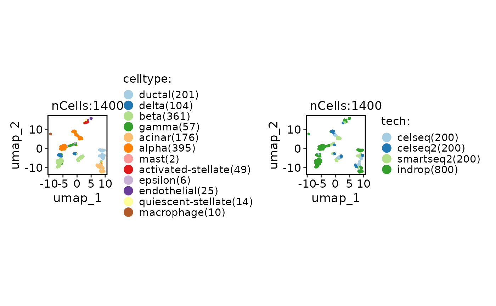

Single-cell reference mapping with CSS method
Usage
RunCSSMap(
srt_query,
srt_ref,
query_assay = NULL,
ref_assay = srt_ref[[ref_css]]@assay.used,
ref_css = NULL,
ref_umap = NULL,
ref_group = NULL,
projection_method = c("model", "knn"),
nn_method = NULL,
k = 30,
distance_metric = "cosine",
vote_fun = "mean"
)Arguments
- srt_query
An object of class Seurat storing the query cells.
- srt_ref
An object of class Seurat storing the reference cells.
- query_assay
A character string specifying the assay name for the query cells. If not provided, the default assay for the query object will be used.
- ref_assay
A character string specifying the assay name for the reference cells. If not provided, the default assay for the reference object will be used.
- ref_css
A character string specifying the name of the CSS reduction in the reference object to use for calculating the distance metric.
- ref_umap
A character string specifying the name of the UMAP reduction in the reference object. If not provided, the first UMAP reduction found in the reference object will be used.
- ref_group
A character string specifying a metadata column name in the reference object to use for grouping.
- projection_method
A character string specifying the projection method to use. Options are "model" and "knn". If "model" is selected, the function will try to use a pre-trained UMAP model in the reference object for projection. If "knn" is selected, the function will directly find the nearest neighbors using the distance metric.
- nn_method
A character string specifying the nearest neighbor search method to use. Options are "raw", "annoy", and "rann". If "raw" is selected, the function will use the brute-force method to find the nearest neighbors. If "annoy" is selected, the function will use the Annoy library for approximate nearest neighbor search. If "rann" is selected, the function will use the RANN library for approximate nearest neighbor search. If not provided, the function will choose the search method based on the size of the query and reference datasets.
- k
An integer specifying the number of nearest neighbors to find for each cell in the query object.
- distance_metric
A character string specifying the distance metric to use for calculating the pairwise distances between cells. Options include: "pearson", "spearman", "cosine", "correlation", "jaccard", "ejaccard", "dice", "edice", "hamman", "simple matching", and "faith". Additional distance metrics can also be used, such as "euclidean", "manhattan", "hamming", etc.
- vote_fun
A character string specifying the function to be used for aggregating the nearest neighbors in the reference object. Options are "mean", "median", "sum", "min", "max", "sd", "var", etc. If not provided, the default is "mean".
Examples
data(panc8_sub)
srt_ref <- panc8_sub[, panc8_sub$tech != "fluidigmc1"]
srt_query <- panc8_sub[, panc8_sub$tech == "fluidigmc1"]
srt_ref <- integration_scop(
srt_ref,
batch = "tech",
integration_method = "CSS"
)
#> ℹ [2025-09-03 14:01:34] Run "CSS" integration...
#> ℹ [2025-09-03 14:01:34] Installing package: simspec...
#> ℹ Loading metadata database
#> ✔ Loading metadata database ... done
#>
#>
#> → Will install 68 packages.
#> → All 68 packages (0 B) are cached.
#> + R6 2.6.1
#> + RANN 2.6.2
#> + RColorBrewer 1.1-3
#> + Rcpp 1.1.0
#> + askpass 1.2.1
#> + base64enc 0.1-3
#> + bslib 0.9.0
#> + cachem 1.1.0
#> + cli 3.6.5
#> + crosstalk 1.2.2
#> + curl 7.0.0 + ✔ libcurl4-openssl-dev, ✔ libssl-dev
#> + data.table 1.17.8
#> + digest 0.6.37
#> + dplyr 1.1.4
#> + evaluate 1.0.5
#> + farver 2.1.2
#> + fastmap 1.2.0
#> + fontawesome 0.5.3
#> + fs 1.6.6 + ✔ make
#> + generics 0.1.4
#> + ggplot2 3.5.2
#> + glue 1.8.0
#> + gtable 0.3.6
#> + highr 0.11
#> + htmltools 0.5.8.1
#> + htmlwidgets 1.6.4
#> + httr 1.4.7
#> + igraph 2.1.4 + ✔ libglpk-dev, ✔ libxml2-dev
#> + irlba 2.3.5.1
#> + isoband 0.2.7
#> + jquerylib 0.1.4
#> + jsonlite 2.0.0
#> + kernlab 0.9-33
#> + knitr 1.50 + ✔ pandoc
#> + labeling 0.4.3
#> + later 1.4.4
#> + lazyeval 0.2.2
#> + lifecycle 1.0.4
#> + magrittr 2.0.3
#> + memoise 2.0.1
#> + mime 0.13
#> + mixtools 2.0.0.1
#> + openssl 2.3.3 + ✔ libssl-dev
#> + pillar 1.11.0
#> + pkgconfig 2.0.3
#> + plotly 4.11.0
#> + promises 1.3.3
#> + purrr 1.1.0
#> + rappdirs 0.3.3
#> + rlang 1.1.6
#> + rmarkdown 2.29 + ✔ pandoc
#> + sass 0.4.10 + ✔ make
#> + scales 1.4.0
#> + segmented 2.1-4
#> + simspec 0.0.0.9000 [bld][cmp] (GitHub: f4c87bf)
#> + stringi 1.8.7 + ✔ libicu-dev
#> + stringr 1.5.1
#> + sys 3.4.3
#> + tibble 3.3.0
#> + tidyr 1.3.1
#> + tidyselect 1.2.1
#> + tinytex 0.57
#> + utf8 1.2.6
#> + vctrs 0.6.5
#> + viridisLite 0.4.2
#> + withr 3.0.2
#> + xfun 0.53
#> + yaml 2.3.10
#> ✔ All system requirements are already installed.
#>
#> ℹ No downloads are needed, 68 pkgs are cached
#> ✔ Got simspec 0.0.0.9000 (source) (8.30 MB)
#> ℹ Installing system requirements
#> ℹ Executing `sudo sh -c apt-get -y update`
#> Get:1 file:/etc/apt/apt-mirrors.txt Mirrorlist [144 B]
#> Hit:2 http://azure.archive.ubuntu.com/ubuntu noble InRelease
#> Get:3 http://azure.archive.ubuntu.com/ubuntu noble-updates InRelease [126 kB]
#> Hit:6 https://packages.microsoft.com/repos/azure-cli noble InRelease
#> Hit:4 http://azure.archive.ubuntu.com/ubuntu noble-backports InRelease
#> Get:5 http://azure.archive.ubuntu.com/ubuntu noble-security InRelease [126 kB]
#> Hit:7 https://packages.microsoft.com/ubuntu/24.04/prod noble InRelease
#> Get:8 http://azure.archive.ubuntu.com/ubuntu noble-security/main amd64 Packages [1118 kB]
#> Get:9 http://azure.archive.ubuntu.com/ubuntu noble-security/main Translation-en [191 kB]
#> Get:10 http://azure.archive.ubuntu.com/ubuntu noble-security/restricted amd64 Packages [1705 kB]
#> Get:11 http://azure.archive.ubuntu.com/ubuntu noble-security/restricted Translation-en [382 kB]
#> Fetched 3649 kB in 1s (5135 kB/s)
#> Reading package lists...
#> ℹ Executing `sudo sh -c apt-get -y install libcurl4-openssl-dev libssl-dev make libglpk-dev libxml2-dev pandoc libicu-dev`
#> Reading package lists...
#> Building dependency tree...
#> Reading state information...
#> libcurl4-openssl-dev is already the newest version (8.5.0-2ubuntu10.6).
#> libssl-dev is already the newest version (3.0.13-0ubuntu3.5).
#> make is already the newest version (4.3-4.1build2).
#> libglpk-dev is already the newest version (5.0-1build2).
#> libxml2-dev is already the newest version (2.9.14+dfsg-1.3ubuntu3.4).
#> pandoc is already the newest version (3.1.3+ds-2).
#> libicu-dev is already the newest version (74.2-1ubuntu3.1).
#> 0 upgraded, 0 newly installed, 0 to remove and 11 not upgraded.
#> ✔ Installed askpass 1.2.1 (56ms)
#> ✔ Installed base64enc 0.1-3 (93ms)
#> ✔ Installed bslib 0.9.0 (139ms)
#> ✔ Installed cachem 1.1.0 (155ms)
#> ✔ Installed cli 3.6.5 (91ms)
#> ✔ Installed crosstalk 1.2.2 (61ms)
#> ✔ Installed curl 7.0.0 (103ms)
#> ✔ Installed data.table 1.17.8 (75ms)
#> ✔ Installed digest 0.6.37 (75ms)
#> ✔ Installed dplyr 1.1.4 (67ms)
#> ✔ Installed evaluate 1.0.5 (62ms)
#> ✔ Installed farver 2.1.2 (59ms)
#> ✔ Installed fastmap 1.2.0 (57ms)
#> ✔ Installed fontawesome 0.5.3 (61ms)
#> ✔ Installed fs 1.6.6 (306ms)
#> ✔ Installed generics 0.1.4 (302ms)
#> ✔ Installed ggplot2 3.5.2 (69ms)
#> ✔ Installed glue 1.8.0 (67ms)
#> ✔ Installed gtable 0.3.6 (60ms)
#> ✔ Installed highr 0.11 (60ms)
#> ✔ Installed htmltools 0.5.8.1 (62ms)
#> ✔ Installed htmlwidgets 1.6.4 (62ms)
#> ✔ Installed httr 1.4.7 (61ms)
#> ✔ Installed igraph 2.1.4 (97ms)
#> ✔ Installed irlba 2.3.5.1 (64ms)
#> ✔ Installed isoband 0.2.7 (62ms)
#> ✔ Installed jquerylib 0.1.4 (62ms)
#> ✔ Installed jsonlite 2.0.0 (67ms)
#> ✔ Installed kernlab 0.9-33 (60ms)
#> ✔ Installed knitr 1.50 (70ms)
#> ✔ Installed labeling 0.4.3 (73ms)
#> ✔ Installed later 1.4.4 (63ms)
#> ✔ Installed lazyeval 0.2.2 (91ms)
#> ✔ Installed lifecycle 1.0.4 (58ms)
#> ✔ Installed magrittr 2.0.3 (58ms)
#> ✔ Installed memoise 2.0.1 (58ms)
#> ✔ Installed mime 0.13 (57ms)
#> ✔ Installed mixtools 2.0.0.1 (57ms)
#> ✔ Installed openssl 2.3.3 (59ms)
#> ✔ Installed pillar 1.11.0 (62ms)
#> ✔ Installed pkgconfig 2.0.3 (91ms)
#> ✔ Installed plotly 4.11.0 (94ms)
#> ✔ Installed promises 1.3.3 (63ms)
#> ✔ Installed purrr 1.1.0 (62ms)
#> ✔ Installed R6 2.6.1 (60ms)
#> ✔ Installed RANN 2.6.2 (59ms)
#> ✔ Installed rappdirs 0.3.3 (63ms)
#> ✔ Installed RColorBrewer 1.1-3 (61ms)
#> ✔ Installed Rcpp 1.1.0 (60ms)
#> ✔ Installed rlang 1.1.6 (94ms)
#> ✔ Installed rmarkdown 2.29 (1.1s)
#> ✔ Installed sass 0.4.10 (1.1s)
#> ✔ Installed scales 1.4.0 (64ms)
#> ✔ Installed segmented 2.1-4 (62ms)
#> ✔ Installed stringr 1.5.1 (1s)
#> ✔ Installed stringi 1.8.7 (1.1s)
#> ✔ Installed sys 3.4.3 (69ms)
#> ✔ Installed tibble 3.3.0 (71ms)
#> ✔ Installed tidyr 1.3.1 (66ms)
#> ✔ Installed tidyselect 1.2.1 (96ms)
#> ✔ Installed tinytex 0.57 (95ms)
#> ✔ Installed utf8 1.2.6 (63ms)
#> ✔ Installed vctrs 0.6.5 (65ms)
#> ✔ Installed viridisLite 0.4.2 (65ms)
#> ✔ Installed withr 3.0.2 (63ms)
#> ✔ Installed xfun 0.53 (63ms)
#> ✔ Installed yaml 2.3.10 (44ms)
#> ℹ Packaging simspec 0.0.0.9000
#> ✔ Packaged simspec 0.0.0.9000 (1.6s)
#> ℹ Building simspec 0.0.0.9000
#> ✔ Built simspec 0.0.0.9000 (2.8s)
#> ✔ Installed simspec 0.0.0.9000 (github::quadbiolab/simspec@f4c87bf) (1s)
#> ✔ 1 pkg + 73 deps: kept 5, added 68, dld 1 (NA B) [42.1s]
#> ℹ [2025-09-03 14:02:16] Installing package: qlcMatrix...
#>
#> → Will install 4 packages.
#> → All 4 packages (0 B) are cached.
#> + docopt 0.7.2
#> + qlcMatrix 0.9.9
#> + slam 0.1-55
#> + sparsesvd 0.2-3
#>
#> ℹ No downloads are needed, 4 pkgs are cached
#> ✔ Got docopt 0.7.2 (x86_64-pc-linux-gnu-ubuntu-24.04) (250.87 kB)
#> ✔ Got sparsesvd 0.2-3 (x86_64-pc-linux-gnu-ubuntu-24.04) (32.50 kB)
#> ✔ Got qlcMatrix 0.9.9 (x86_64-pc-linux-gnu-ubuntu-24.04) (3.30 MB)
#> ✔ Installed docopt 0.7.2 (59ms)
#> ✔ Installed qlcMatrix 0.9.9 (74ms)
#> ✔ Installed slam 0.1-55 (96ms)
#> ✔ Installed sparsesvd 0.2-3 (105ms)
#> ✔ 1 pkg + 5 deps: kept 1, added 4, dld 3 (3.59 MB) [1.7s]
#> ℹ [2025-09-03 14:02:18] Spliting `srt_merge` into `srt_list` by column "tech"...
#> ℹ [2025-09-03 14:02:19] Checking srt_list...
#> ℹ [2025-09-03 14:02:19] Data type is log-normalized
#> ℹ [2025-09-03 14:02:19] Data 1/4 of the `srt_list` has been log-normalized
#> ℹ [2025-09-03 14:02:19] Perform `Seurat::FindVariableFeatures()` on the data 1/4 of the `srt_list`...
#> ℹ [2025-09-03 14:02:19] Data type is log-normalized
#> ℹ [2025-09-03 14:02:19] Data 2/4 of the `srt_list` has been log-normalized
#> ℹ [2025-09-03 14:02:19] Perform `Seurat::FindVariableFeatures()` on the data 2/4 of the `srt_list`...
#> ℹ [2025-09-03 14:02:20] Data type is log-normalized
#> ℹ [2025-09-03 14:02:20] Data 3/4 of the `srt_list` has been log-normalized
#> ℹ [2025-09-03 14:02:20] Perform `Seurat::FindVariableFeatures()` on the data 3/4 of the `srt_list`...
#> ℹ [2025-09-03 14:02:21] Data type is log-normalized
#> ℹ [2025-09-03 14:02:21] Data 4/4 of the `srt_list` has been log-normalized
#> ℹ [2025-09-03 14:02:21] Perform `Seurat::FindVariableFeatures()` on the data 4/4 of the `srt_list`...
#> ℹ [2025-09-03 14:02:21] Use the separate HVF from srt_list
#> ℹ [2025-09-03 14:02:22] Number of available HVF: 2000
#> ℹ [2025-09-03 14:02:22] Finished checking.
#> ℹ [2025-09-03 14:02:24] Perform ScaleData on the data...
#> ℹ [2025-09-03 14:02:24] Perform linear dimension reduction("pca") on the data...
#> ℹ [2025-09-03 14:02:24] `linear_reduction` pca is already existed. Skip calculation
#> ℹ [2025-09-03 14:02:24] Perform CSS integration on the data...
#> Warning: no non-missing arguments to min; returning Inf
#> Warning: no non-missing arguments to max; returning -Inf
#> ℹ [2025-09-03 14:02:24] Using Reduction("CSSpca", dims:Inf--Inf) as input
#> Error in features_usage[, "data"]: subscript out of bounds
CellDimPlot(srt_ref, group.by = c("celltype", "tech"))
#> Warning: No shared levels found between `names(values)` of the manual scale and the
#> data's fill values.
#> Warning: No shared levels found between `names(values)` of the manual scale and the
#> data's fill values.

# Projection
srt_query <- RunCSSMap(
srt_query = srt_query,
srt_ref = srt_ref,
ref_css = "CSS",
ref_umap = "CSSUMAP2D"
)
#> Error in srt_ref[[ref_css]]: ‘CSS’ not found in this Seurat object
#>
ProjectionPlot(
srt_query = srt_query,
srt_ref = srt_ref,
query_group = "celltype",
ref_group = "celltype"
)
#> Error in srt_query[[query_reduction]]: ‘ref.embeddings’ not found in this Seurat object
#>